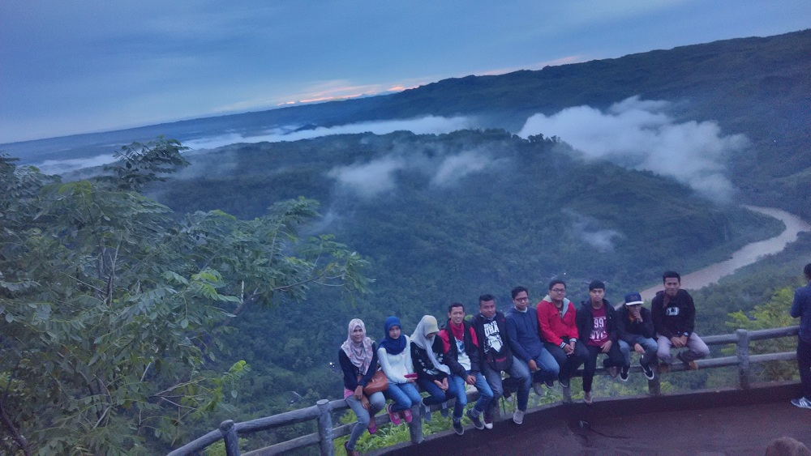

Pilih Paket Wisata Jogja/ Paket Tour Jogja/ Paket Liburan Jogja sesuai dengan keinginan anda. Kami menyediakan paket wisata dengan tempat wisata di Jogja Lengkap. Ingin berlibur ke Yogyakarta namun tidak punya banyak waktu untuk mengurus akomodasi dan membuat itinerary perjalanan ? Jangan khawatir ! Kami sebagai biro perjalanan Wisata / Agen Tour & Travel di Jogja siap membantu merencanakan paket liburan
Tentang Kami
Pesan Mudah
Memberikan kemudahan dalam setiap prosesnya. Anda bebas menentukan jadwal dan fasilitas sesuai keinginan anda
Pelayanan Terbaik
Kami pastikan perjalanan anda menerima pelayanan terbaik, dengan SDM yang sudah terjamin dan berkualitas dibidangnya
Harga Murah
Tidak perlu khawatir lagi untuk berwisata dengan budget yang minim, karena kami akan membantu merencanakan perjalanan wisata anda sesuai dengan budget yang anda miliki
Siap Melayani
Pelayanan 24 jam dalam seminggu, tim kami akan senantiasa memberikan kenyamanan dalam setiap perjalanan anda
Testimoni
Liburan Yang Dilakukan Oleh Customer Kami

- Bukit Klangon
- Spot selfie yang ada di kawasan Klangon, Cangkringan, Sleman ini sedang hits di Instagram. Berjarak hanya 4 km dari puncak Merapi.Bukit Klangon selain terkenal untuk downhill juga bisa untuk spot selfie yang menarik dengan latar belakang Gunung Merapi dan bisa menikmati pemandangan di gardu pandang yang mantap. Bagi penyuka downhill, kita bisa mencoba jalur ber-adrenalin ini dengan panjang trek sekitar 20 km plus dengan tingkat elevasi start dan finish kurang lebih 300 meter. Dengan trek sepanjang ini, pesepeda bisa menempuh waktu sekitar 1.5 jam.

- Candi Ijo
- Candi Ijo terletak di Dukuh Groyokan, Desa Sambirejo, Kecamatan Prambanan, Kabupaten Sleman, Yogyakarta. Candi ini berada lereng barat sebuah bukit yang masih merupakan bagian perbukitan Batur Agung, kira-kira sekitar 4 kilometer arah tenggara Candi Ratu Boko. Dimana pada bagian bawah lereng tersebut terdapat wisata tebing Breksi Jogja yang merupakan bekas pertambangan batu alam. Posisinya berada pada lereng bukit dengan ketinggian rata-rata 425 meter di atas permukaan laut[2]. Candi ini dinamakan "Ijo" karena berada di atas bukit yang disebut Gumuk Ijo. Kompleks percandian membuka ke arah barat dengan panorama indah, berupa persawahan dan bentang alam, seperti Bandara Adisucipto dan pantai Parangtritis.

- Mangunan
- Candi Ijo terletak di Dukuh Groyokan, Desa Sambirejo, Kecamatan Prambanan, Kabupaten Sleman, Yogyakarta. Candi ini berada lereng barat sebuah bukit yang masih merupakan bagian perbukitan Batur Agung, kira-kira sekitar 4 kilometer arah tenggara Candi Ratu Boko. Dimana pada bagian bawah lereng tersebut terdapat wisata tebing Breksi Jogja yang merupakan bekas pertambangan batu alam. Posisinya berada pada lereng bukit dengan ketinggian rata-rata 425 meter di atas permukaan laut[2]. Candi ini dinamakan "Ijo" karena berada di atas bukit yang disebut Gumuk Ijo. Kompleks percandian membuka ke arah barat dengan panorama indah, berupa persawahan dan bentang alam, seperti Bandara Adisucipto dan pantai Parangtritis.

- Pantai Jogan
- Pantai Jogan adalah pemberi kesegaran, laksana oase di luasnya hamparan pantai pasir putih Gunungkidul. Juga seperti garnishes di piring yang terlalu sayang untuk dilewatkan. Pantai yang tepat bagi Anda yang ingin merasakan sensasi berbeda dari surga pesisir selatan Jogja.

- Landasan Depok
- Mata awam mungkin tak akan kagum olehnya. Sepintas, memang tak ada yang spesial, landasan pacu ini hanyalah sebuah jalan lurus berujung sepanjang 400 meter lengkap dengan marka jalannya yang tepat berada di tepi pantai. Pohon cemara udang dan belukar khas pantai adalah penghuni sisi kanan dan kirinya. Namun, siapa mengira landasan pacu aeromodeling ini begitu fotogenik. Ia dapat tampak begitu dramatis ketika sebuah pesawat aerobatik hilir mudik, tampak menyenangkan ketika sekelompok remaja berpose girang dan begitu romantis ketika sepasang sejoli tersenyum manis di depan kamera.

- Hutan Pinus Imogiri
- Hutan Pinus Mangunan merupakan bagian dari Resort Pengelolaan Hutan (RPH) Mangunan yang lokasinya tak jauh dari Imogiri, Bantul, Yogyakarta. Karena itu, orang-orang kerap menyebutnya dengan nama Hutan Pinus Imogiri. Di kawasan ini, travelers bisa menyaksikan deretan pohon pinus yang tegak menjulang dengan indahnya.